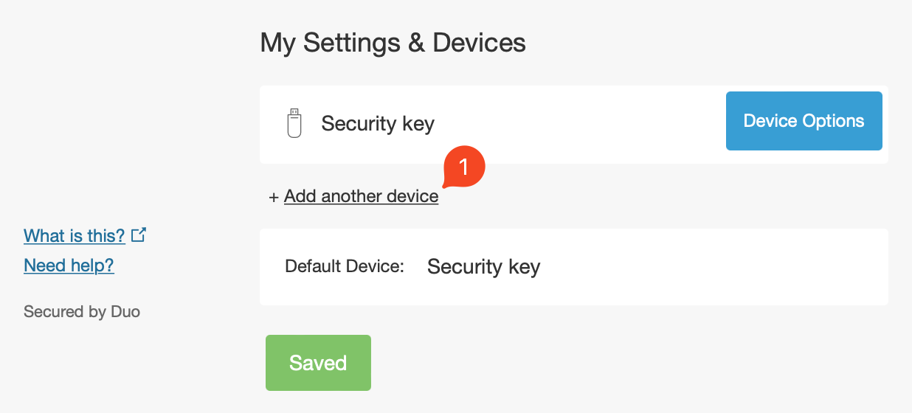
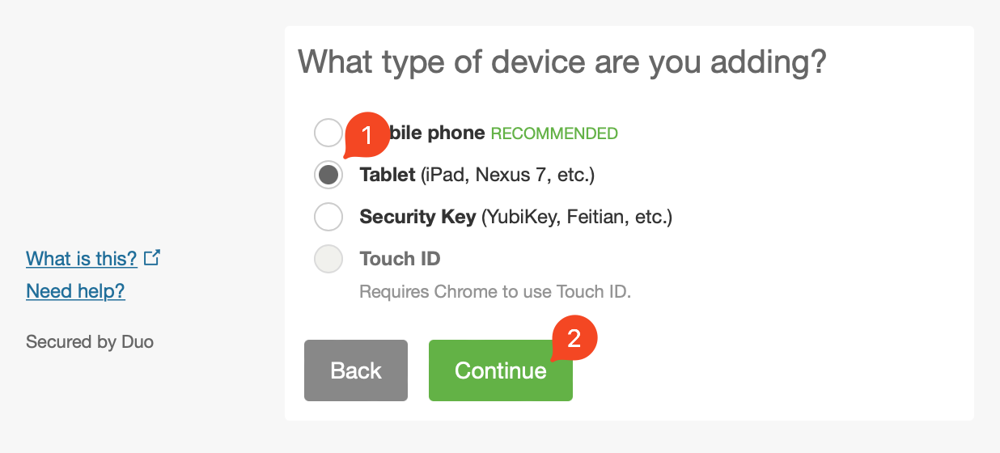
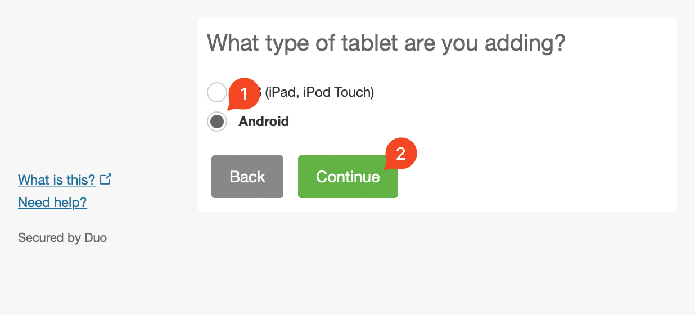
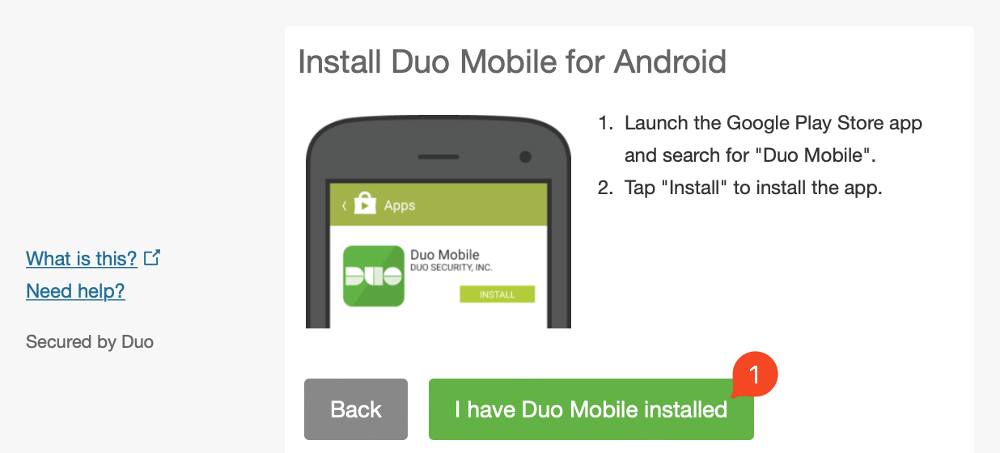

Welcome to duo-bypass!
duo-bypass is a tool allowing you to use any valid two factor authentication app (that supports HOTP) in place of Cisco's proprietary proprietary DUO software.
Is it secure?
Absolutely, DUO uses the same HOTP standards as every other 2FA app in the security space. They just encapsulate that standard in their own software to lock you down to their app. This tool tells DUO that you are the DUO app allowing you to activate a 2FA key in whatever app you choose.
Alternatively, if you are uncomfortable placing your DUO credentials in a web interface, there is a script-based version of the tool.
Why not just use DUO?
There are many reasons you may want to avoid using the DUO app from usability to ideological. I've listed a few below:
- You already use a 2FA app like Google Authenticator and don't want another.
- You prefer using open-source or non-proprietary software
- You are uncomfortable with the data collection that takes place within the DUO Mobile application.
- You would like to have DUO 2FA access on a computer and not just a mobile device that may die.
- You have multiple mobile devices you would like to secure with a single could-based 2FA solution.
- You would like to have 2FA autofill with supported apps to not ever have to deal with DUO notifications or codes.
How to setup duo-bypass:
- Navigate you your organization's DUO Security Portal.
- Login with your current DUO 2FA method.
- In the Security Portal, select + Add another device. 
- Select Tablet. 
- Select Android. 
- Select I have DUO Mobile installed. 
- Right click on the provided QR code and copy the image URL.
- Navigate to the duo-bypass tool.
- Paste the image URL into the duo-bypass tool and select bypass.
- Scan the QR code into your chossen 2FA application. If the app does not support a QR code, copy the key below the QR code into your app.
- Generate/test your first bypass code and you're done! (You can also now rename the device in DUO if you would like)